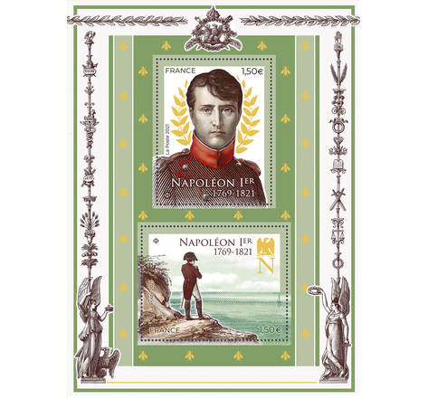
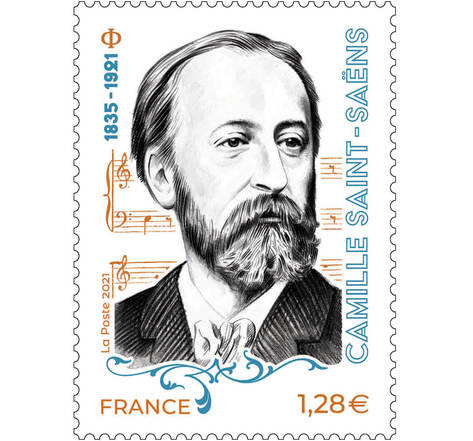
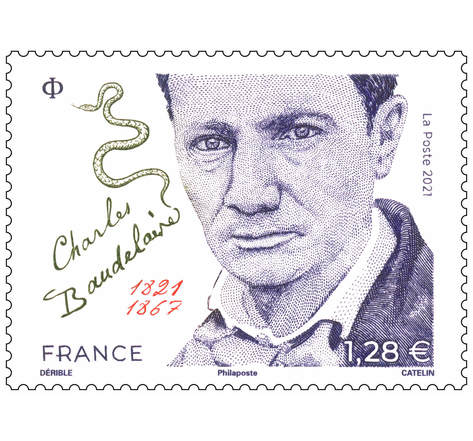
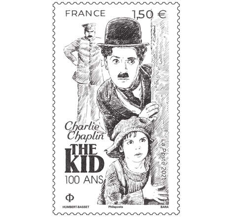

Nos plus belles pièces
- Timbres napoléon:
- Timbres Saint-Saëns:
- Timbres Beaudelaire:
- Timbres Chaplin:
Général couvert de gloire à trente ans seulement, Napoléon Bonaparte devient Premier consul (1800-1804), puis Empereur des Français (1804-1814). Sa volonté réformatrice et son génie militaire, bien plus que son intelligence politique, font de lui un personnage controversé de l'histoire de France.

Camille Saint-Saëns est un compositeur, pianiste, et organiste français du XIXème siècle. Fondateur de la Société Nationale de Musique en 1871, il se caractérise par un attachement prononcé à la musique française de son époque, avec ses amis César Franck, Edouard Lalo, Gabriel Fauré.

Suivant une vie de bohème et de dandy parisien, Baudelaire est un poète symboliste. Il consacre sa vie à sa principale création : les Fleurs du Mal. Auteur torturé, le spleen devient le fil conducteur de son œuvre.

Né en 1889 et mort en 1977, Charlie Chaplin est l'inventeur de Charlot, l'un des personnages les plus célèbres de l'histoire du cinéma. Ce vagabond généreux et maladroit était le grand comique du cinéma muet dans les années 1910 et 1920.
